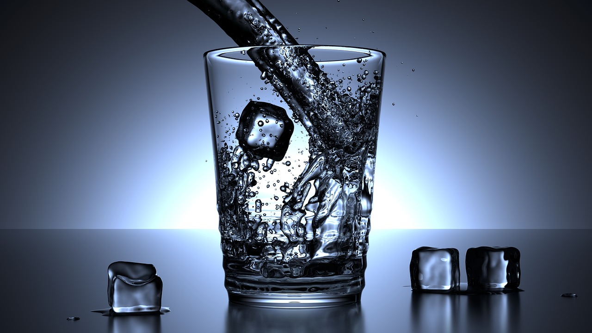
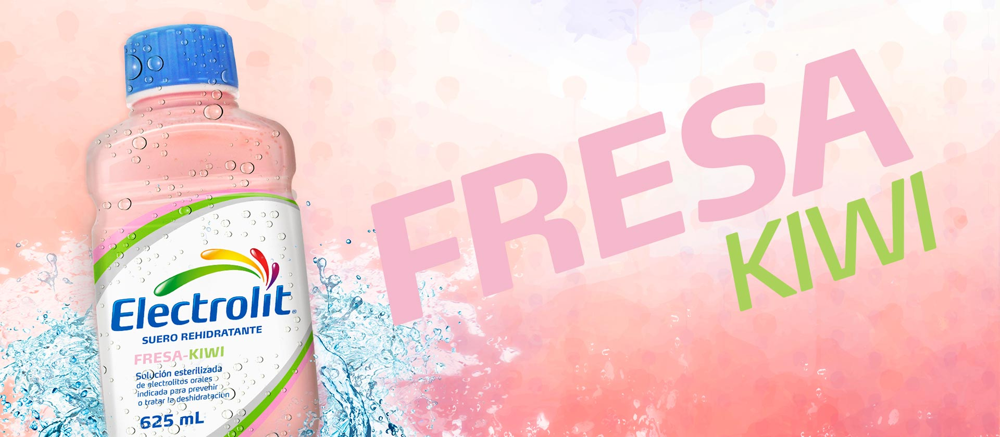
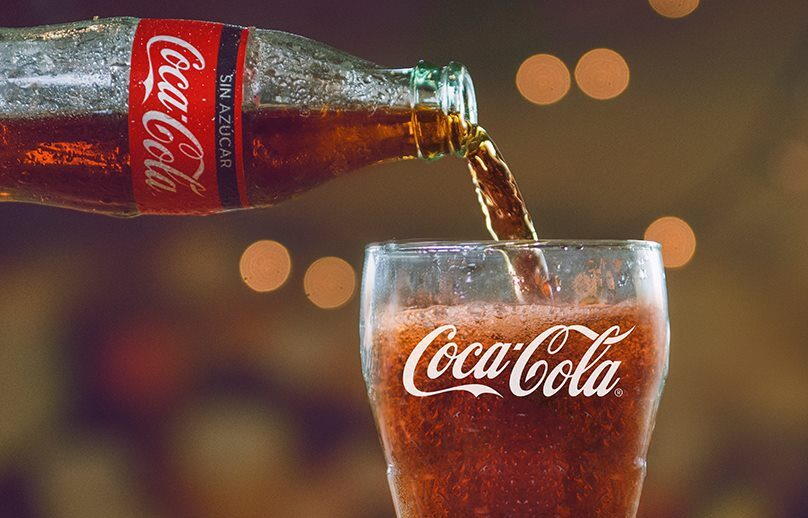
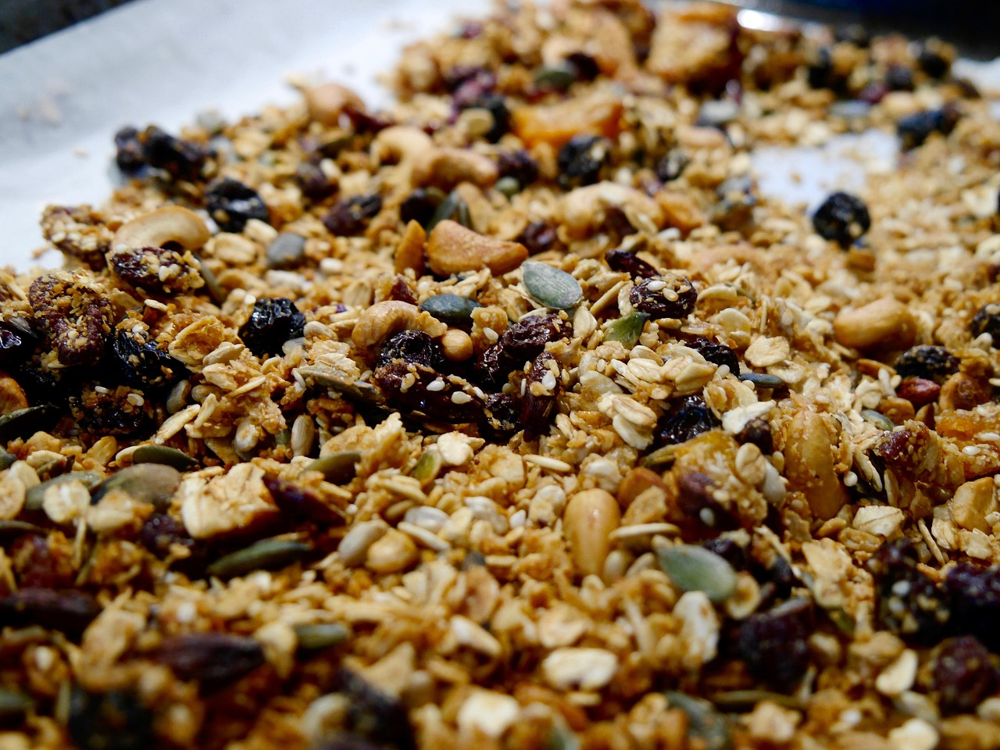
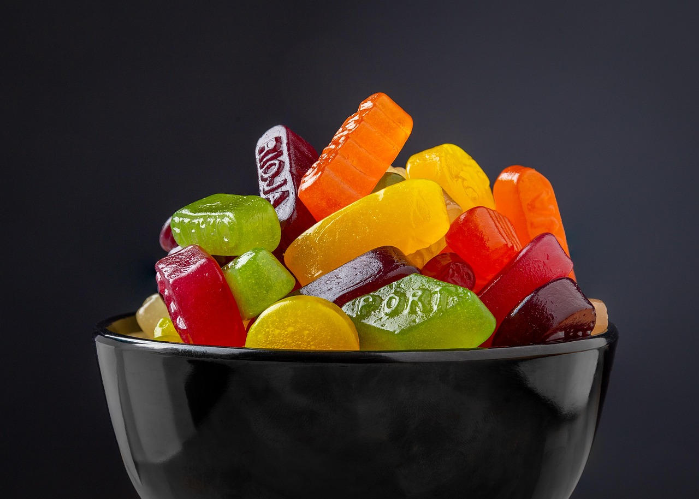

Hidratación
💧 La hidratación es fundamental en cualquier actividad física. Siempre es recomendable llevar entre 1 y 2 litros de agua, según tu condición física, el clima y la distancia que pienses recorrer (cada persona conoce su cuerpo).
No basta con beber agua: cuando sudamos perdemos también sales minerales, por eso es importante complementar con suero o electrolitos en la cantidad adecuada (hasta 1 litro suele ser suficiente).
Además, en momentos de cansancio extremo puede ser útil un aporte rápido de azúcar para recuperar energía. Una opción práctica es una bebida azucarada —por ejemplo, una gaseosa en presentación pequeña (no más de 600 ml)— que puede darte un “rush” inmediato de energía y ayudarte a continuar.
Lunch
Un lunch saludable y práctico para la montaña es un sándwich. Puedes prepararlo con pan integral, una fuente de proteína como pollo, pavo o atún, acompañado de vegetales frescos (jitomate, lechuga, pepino, espinaca) y un poco de queso o aguacate para darle energía y sabor. Uno o dos sándwiches son suficientes según tu recorrido y hambre.




Snacks
Semillas y frutos secos (cacahuates, nueces, almendras, arándanos deshidratados, etc.) → Una porción de 80 g es más que suficiente. Son ricos en grasas saludables, proteína y fibra, lo que te da energía sostenida y ayuda a mantener la saciedad durante el esfuerzo físico.
Gomitas → Una porción de 80 g es más que suficiente. Aportan azúcares de rápida absorción, ideales cuando necesitas un empujón inmediato de energía en medio del ascenso.
Chocolate (mejor si es oscuro) → Una porción de 80 g es más que suficiente. Contiene carbohidratos rápidos y un poco de cafeína natural, lo que mejora la concentración y te da un extra de vitalidad en momentos de cansancio.